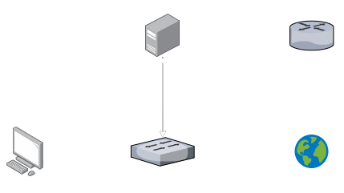

Introduction
For the past eight weeks, I have been working on creating a reliable process for network booting a Raspberry Pi 4 for a university project.
As a Year 1 student in Queen's University Belfast, I'm currently taking a module called "Computer Science Challenges", where we are challenged to create a project of complexity way above what is traditionally expected of Year 1 students, and may be more closely compared to a final year project. I'm here to share my advice and experience I have gained so far.
My Project
I opted for a project with the following brief:
Develop a custom raspberry pi operating system image that will configure the network connections and auto launch a web app on boot.
The RPIs should be network booted from a server (nothing is stored locally preventing many cyber security issues and one source to update for patching and new functionality)
The networked device should assign a consistent ip address to each network booted raspberry pi based on their mac address so devices can be easily controlled.
The project is focused on creating scripts to build a network boot raspbian image or another suitable operating system. The building of the operating system image should be fully automated so that the operating system can be easily upgraded as new versions are released.
By the end of this blog post, I hope that you will learn about my project, and be able to develop it further if you'd like!
Raspberry Pi's
Raspberry Pi's are wonderful little machines. Tiny single-board computers that run a custom version of Debian, dubbed RaspiOS, which are extremely versitile and suited to a wide range of use cases, and hopefully you will see that as we progress throughout the post.
Beginning this project, I had a very small amount of experience dealing with Raspberry Pi's, simply running a Python application on one tucked away under my desk. The fact that I already had one lying around was one reason why I opted for this particular project, since the idea of network booting it was way more exciting than what I was currently using it for.
Network Booting
Network booting is an incredibly useful technology used in many applications today. It's likely you've used a network booted computer if you've ever used one in a library, or your school. They are also extensively used within business where their versitility and security benefits can be utilised to assist the operations of that business, and that is the area my project will be focusing on.
The process of network booting involves two groups of machines.
- The server provides the operating system files to the clients requesting them, and handles any interaction the clients have with files and programs.
- The client, at boot, searches and downloads the operating system files made available by the server in place of a traditional OS installed on a physical disk attached to the machine.
This process enables the clients to be smaller and cheaper due to the smaller computational power need, thanks to the server handling lots of the heavy lifting. As such, these machines are referred to as thin clients.
My Setup
When I began this project, and currently at the time of writing, we are still in the middle of the Coronavirus pandemic. Because of this, my access to hardware and university equipement was heavily limited, and I was only able to afford to purchase one extra Raspberry Pi 4.
Ideally, I would have been able to set up multiple Pi 4 clients to test reliable IP assignment and communication with the server, but the aim of this project is to create a fully automated setup procedure, in the hope that adding more clients in the future requires minimal work.
This Pi 4 will be acting as my client, and will be booted from the Pi 3B+ I already had, acting as my server.
One main focus of network booting in this way is giving the server as much control over the clients as is possible. In my case, this also included controlling the clients' access to the internet, requiring internet traffic to first flow through the server. This setup allows the server to block sites, scan for malicious traffic or perform related actions to further improve security.
To set this up in my home, it was thankfully not too much of a challenge. The Pi 3B+ has both a wired ethernet port, and a wireless adapter, so I decided to utilise the wired connection for interactions with the client, the use the wireless adapter for connecting to the internet.
Because I was creating a network physically isolated from my home network, I also needed an extra switch to plug the server and client in to.
Below is a rough overview of my setup:
Etcher
Etcher is a simple tool for flashing OS image files to external devices, in my case, a MicroSD card through a USB adapter. I used Etcher to flash the Rasberry Pi Lite OS to my card in order to set up the client and the server. It's very convenient that the OS is backwards compatible with all models of Raspberry Pi, and saved me a lot of time.
I go into this process in more detail on the how-to guide I produced for this setup, linked at the bottom of this post.
Client Setup
Unfortunately network booting is not enabled by default on the Raspberry Pi 4, and requires a small bit of configuration to set up. Luckily though this allows us to quickly access the serial number of the Pi, I'll explain a bit later why we need that.
I had to change the boot order of the client, so that it knows to search the network for an operating system, rather than trying to boot from an SD card and then just giving up when it can't find one.
This was done with a few simple commands on the client:
sudo -E rpi-eeprom-config --edit
# change BOOT_ORDER from 0xf41 to 0xf21 then save
# reboot to apply changes
sudo rebootServer Setup
Setting up the server Pi was by far the most involved part of this endeavour. Not having a lot of experience with Raspberry Pis or linux-based operating systems, and having no experience with network booting, I was completely at the mercy of the availability of online resources to help me get started. Throughout this process, I came across some useful utilities that helped me along the way.
Automated scripts for both the client and server setup process are included in the link to the GitHub repo at the bottom of the post.
dnsmasq
dnsmasq was an essential tool in my setup. It provides DHCP, DNS and TFTP functions, but I opted not to use the DNS functionality, since I will already be connected to a home network.
- DHCP (Dynamic Host Configuration Protocol) was used to assign the client an IP address upon boot, so that it may communicate with the server.
- TFTP (Trivial File Transfer Protocol) was used to send the OS files to the client once a connection had been established.
nfs-kernel-server
nfs-kernel-server was used to export the client filesystem, making it available to the client Pi 4. It was incredibly easy to set up and configure. NFS is a protocol to enable the sharing of files and directories to other linux machines on a network, so it was perfect for my needs.
Downloading and unpacking the client image
The first step was to prepare the client image for booting. I downloaded it from the raspberrypi.org website and unpacked it and created the device maps using kpartx.
cd /home/pi
sudo apt install unzip kpartx dnsmasq nfs-kernel-server -y
sudo mkdir -p /nfs/raspi1
sudo wget https://downloads.raspberrypi.org/raspios_armhf/images/raspios_armhf-2021-01-12/2021-01-11-raspios-buster-armhf.zip
unzip 2021-01-11-raspios-buster-armhf.zip
sudo kpartx -a -v 2021-01-11-raspios-buster-armhf.img
mkdir rootmnt
mkdir bootmnt
sudo mount /dev/mapper/loop0p2 rootmnt/
sudo mount /dev/mapper/loop0p1 bootmnt/
sudo cp -av rootmnt/* /nfs/raspi1/
sudo cp -av bootmnt/* /nfs/raspi1/boot/Next, I replaced some firmware files with their updated versions from the official GitHub repository.
cd /nfs/raspi1/boot
sudo rm start4.elf
sudo rm fixup4.dat
sudo wget https://github.com/Hexxeh/rpi-firmware/raw/master/start4.elf
sudo wget https://github.com/Hexxeh/rpi-firmware/raw/master/fixup4.datNow that the file system for the client is ready to be used, I need to set up TFTP and nfs-kernel-server.
The
$serialtext is replaced with the serial number of the client to be booted, more info is included in theserver-setup-2.shfile on the GitHub repo at the bottom of the post.
cd /
sudo mkdir -p /tftpboot/$serial
echo "/nfs/raspi1/boot /tftpboot/$serial none defaults,bind 0 0" | sudo tee -a /etc/fstab
sudo mount /tftpboot/$serial
sudo chmod 777 /tftpboot
sudo touch /nfs/raspi1/boot/ssh
sudo sed -i /UUID/d /nfs/raspi1/etc/fstab
echo "console=serial0,115200 console=tty root=/dev/nfs nfsroot=192.168.10.1:/nfs/raspi1,vers=3 rw ip=dhcp rootwait elevator=deadline" | sudo tee /nfs/raspi1/boot/cmdline.txt
echo "/nfs/raspi1 *(rw,sync,no_subtree_check,no_root_squash)" | sudo tee -a /etc/exportsNext it was time to set up dnsmasq. My inexperience really shows here, there is probably a better way to modify this file. Get used to a lot of echoing.
echo 'log-dhcp' | sudo tee -a /etc/dnsmasq.conf
echo 'enable-tftp' | sudo tee -a /etc/dnsmasq.conf
echo 'tftp-root=/tftpboot' | sudo tee -a /etc/dnsmasq.conf
echo 'pxe-service=0,"Raspberry Pi Boot"' | sudo tee -a /etc/dnsmasq.confAt this stage, if the client was connected to my home network, it would boot. But I still wanted finer control over the client's access to the internet, so the rest of the setup concerns making that happen.
Enabling wireless networking was a bit of a pain. Through a bit of trial and error, it seems difficult to set up through scripts, still requiring raspi-config to be run.
sudo raspi-config
# select localisation options
# set country code
# finish
# reboot
echo "network={" | sudo tee -a /etc/wpa_supplicant/wpa_supplicant.conf
echo ssid=\"$network_ssid\" | sudo tee -a /etc/wpa_supplicant/wpa_supplicant.conf
echo psk=\"$network_psk\" | sudo tee -a /etc/wpa_supplicant/wpa_supplicant.conf
echo "}" | sudo tee -a /etc/wpa_supplicant/wpa_supplicant.confThe next thing to do is set up iptables, which will manage traffic in both directions from the client. If you're like me and had/still have no idea how this works, there's a really good guide linked at the bottom of the post.
sudo iptables -F
sudo iptables -t nat -F
sudo iptables -t nat -A POSTROUTING -o wlan0 -j MASQUERADE
sudo iptables -A FORWARD -i wlan0 -o eth0 -m state --state RELATED,ESTABLISHED -j ACCEPT
sudo iptables -A FORWARD -i eth0 -o wlan0 -j ACCEPT
sudo sh -c "sudo iptables-save > /etc/iptables.v4"
echo "1" | sudo tee /proc/sys/net/ipv4/ip_forward
echo "net.ipv4.ip_forward=1" | sudo tee -a /etc/sysctl.confThe iptables configuration, annoyingly, doesn't persist between reboots, so I had to modify rc.local to reload them whenever the server boots up.
sudo sed -i "$ d" /etc/rc.local
echo 'sudo sh -c "iptables-restore < /etc/iptables.v4"' | sudo tee -a /etc/rc.local
echo "sleep 3"
echo 'sudo route add -net default gw 192.168.10.1 netmask 0.0.0.0 dev eth0' | sudo tee -a /etc/rc.local
echo "sudo route del -net 0.0.0.0 gw 192.168.10.1 netmask 0.0.0.0 dev eth0" | sudo tee -a /etc/rc.localdnsmasq now needs to be configured to hand out DHCP leases to clients. The range here can be modified, but on my setup I was running a very small number (1) of clients so I chose a small range.
echo "interface=eth0" | sudo tee -a /etc/dnsmasq.conf
echo "bind-interfaces" | sudo tee -a /etc/dnsmasq.conf
echo "server=8.8.8.8" | sudo tee -a /etc/dnsmasq.conf
echo "domain-needed" | sudo tee -a /etc/dnsmasq.conf
echo "bogus-priv" | sudo tee -a /etc/dnsmasq.conf
echo "dhcp-range=192.168.10.20,192.168.10.30,12h" | sudo tee -a /etc/dnsmasq.confFinally, we need to give the server a static IP address. I've also set the nameserver to the address of my home router, and made sure the wireless adapter has been enabled.
echo "interface eth0" | sudo tee -a /etc/dhcpcd.conf
echo "static ip_address=192.168.10.1" | sudo tee -a /etc/dhcpcd.conf
sudo sed -i "$ d" /etc/resolv.conf
echo "nameserver $router_address" | sudo tee -a /etc/resolv.conf
sudo wpa_cli -i wlan0 reconfigureWhy is this useful?
The aim of this setup is that it provides a quick and easy setup for network booting. In a more real-world scenario, not just "making it for a university project", this setup could be used to replace any computer which is used for a small number of lightweight applications, such as word processing, or makes use of web applications.
The main advantages of a network booting setup for these applications compared to having a standalone machine for each computer are:
- Cost. Raspberry Pi's are frankly dirt cheap. A Pi 4 with the board, a case, a display cable and power supply will cost you just over £50. Compare that to an entire desktop PC and you could be spending anywhere from £150 to £600, to accomplish the same tasks.
- Efficiency. Since all files are stored on one server, tasks which otherwise would take a lot of manual effort such as upgrading the OS or updating programs are orders of magnitude faster having all of them stored on a single machine. There is only one source for upgrades and updates to be done.
- Security. In this setup, the server has complete control over the connection the clients have to the internet, and is able to monitor and restrict any internet traffic that could be wanted.
I can see this setup being particularly useful to small businesses, with maybe 5-10 workstations or kiosks, where they would be able to use, update and control them much more efficiently and effectively.
Congratulations, you made it to the end!
Thanks for reading this far. Hopefully you've gained an understanding of why this project could be beneficial to a wide range people, and that you appreciate the coolness factor as much as I do.
DIY
If you'd like to play around with this setup yourself, I have set up a GitHub repository where I've condensed the content of this post into two scripts you can run on (probably) any Debian-esque OS. Make sure to read the README file as it contains a lot of important info on how they're supposed to be run.
https://github.com/jamzss/rpi-network-boot
If you require it, I've also produced a how-to guide for getting set up with an Ubuntu installation to prepare an OS image for your server.
(link to how-to guide)
Other Useful Resources
Here is a list of resources I used while researching and working on the project, if you'd like to read more into some specific resources I've used.